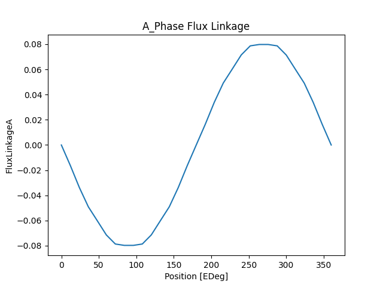

Note
Go to the end to download the full example code.
Motor-CAD EMag Twin Builder ECE#
This example provides a Motor-CAD script for exporting an equivalent circuit extraction (ECE) model for permanent magnet synchronous motors (PMSMs) from Motor-CAD to Ansys Twin Builder.
Note
This example requires the use of a JSON configuration file. The ece_config.json file should
be saved to the same directory as this example Python script. You can download the
ece_config.json file from:
ansys/pymotorcad
Set up example#
Setting up this example consists of performing imports, launching Motor-CAD, disabling all popup messages from Motor-CAD, and importing the initial settings.
Perform required imports#
Import the required packages.
import json
import math
import os
import shutil
import string
import tempfile
import matplotlib.pyplot as plt
import numpy as np
from scipy import io
import ansys.motorcad.core as pymotorcad
Launch Motor-CAD#
Initialise automation and launch Motor-CAD.
print("Starting initialisation.")
mc = pymotorcad.MotorCAD()
Starting initialisation.
Disable popup messages#
Disable all popup messages from Motor-CAD.
mc.set_variable("MessageDisplayState", 2)
Import and save initial settings#
Define the read_parameters function to import initial settings from a JSON file and return a
dictionary:
Specify the working directory. The Motor-CAD file and results are saved to a temporary folder. Alternatively, you can set the working directory to an appropriate file location on your computer.
working_folder = os.path.join(tempfile.gettempdir(), "twinbuilder_ECE_export")
try:
shutil.rmtree(working_folder)
except:
pass
os.mkdir(working_folder)
Use the read_parameters function to open the ece_config.json configuration file and import
the data as the in_data dictionary.
The JSON configuration file must be saved to the same directory as this Python script. The
ece_config.json file can be downloaded from the PyMotorCAD GitHub repository:
ansys/pymotorcad
json_file = os.path.join(os.getcwd(), "ece_config.json")
in_data = read_parameters(json_file)
The necessary data is extracted from the in_data dictionary. The JSON configuration file
contains:
The Motor-CAD MOT filename to be used for the ECE export. If the file exists in the same directory as this Python script, it will be copied to the
working_folderlocation. If the file does not exist in the same directory as this Python script or theworking_folderlocation, the script opens the e8 Motor-CAD template by default.Operating parameters for the electric machine (shaft speed, DC bus voltage, temperature, maximum current, current resolution and number of points per cycle for the torque calculation). If using an input file, the file in the
working_folderwill be modified by setting the operating parameter input settings.The filenames to be used for the results files that are exported (map, text file and SML file). Exported files are saved to the working directory, in a subfolder named
Results.
file_name = in_data["mot_file"]
mot_file = os.path.join(working_folder, file_name)
shaft_speed = in_data["shaft_speed"]
dc_bus_voltage = float(in_data["dc_bus_voltage"])
machine_temp = float(in_data["machine_temp"])
Id_max = float(in_data["Id_max"])
current_step = float(in_data["current_step"])
points_per_cycle = float(in_data["torque_points_per_cycle"])
results_folder = os.path.join(working_folder, "Results")
try:
shutil.rmtree(results_folder)
except:
pass
os.mkdir(results_folder)
map_name = os.path.join(results_folder, in_data["map_name"])
txt_file = os.path.join(results_folder, in_data["txt_file"])
sml_file = os.path.join(results_folder, in_data["sml_file"])
Load the Motor-CAD file. If the mot_file specified in the JSON configuration file exists in
the same directory as this Python script, open the MOT file. If the file does not exist in the
same directory as this Python script, check the working_folder for the Motor-CAD file. The
file will be modified by setting the operating parameter input settings and saved to the
working_folder.
If the file does not exist in the same directory as this Python script or the working_folder,
load the e8 IPM motor template and save the file to the working directory. Use the mot_file
filename that was taken from the JSON configuration file. Save input settings to a Motor-CAD MOT
file.
if os.path.isfile(os.path.join(os.getcwd(), file_name)):
shutil.copy(os.path.join(os.getcwd(), file_name), mot_file)
print(f"Motor-CAD file copied from {os.path.join(os.getcwd(), file_name)} to {mot_file}.")
mc.load_from_file(mot_file)
print("Opening " + mot_file)
elif os.path.isfile(mot_file):
mc.load_from_file(mot_file)
print("Opening " + mot_file)
else:
mc.load_template("e8")
mc.save_to_file(mot_file)
print("Opening Motor-CAD e8 template and saving to " + mot_file)
Opening Motor-CAD e8 template and saving to C:\Users\ansys\AppData\Local\Temp\twinbuilder_ECE_export\e8_eMobility.mot
Determine alignment angle#
Set up calculation#
Set up the Motor-CAD E-Magnetic calculation to run the open circuit back EMF calculation, so that the drive offset angle can be determined. Define the calculation settings as taken from the JSON configuration file.
Set the number of points per cycle for the torque calculation in Motor-CAD.
mc.set_variable("TorquePointsPerCycle", points_per_cycle)
Set the shaft speed for the calculation.
mc.set_variable("ShaftSpeed", shaft_speed)
Set the Line Current Definition option to Peak and set the peak current to zero.
mc.set_variable("CurrentDefinition", 0)
mc.set_variable("PeakCurrent", 0)
Set the DC bus voltage.
mc.set_variable("DCBusVoltage", dc_bus_voltage)
Set the armature winding, magnet and shaft temperatures.
mc.set_variable("ArmatureConductor_Temperature", machine_temp)
mc.set_variable("Magnet_Temperature", machine_temp)
mc.set_variable("Shaft_Temperature", machine_temp)
Set the E-Magnetic <-> Thermal Coupling option to No Coupling.
mc.set_variable("MagneticThermalCoupling", 0)
Select the Back EMF and deselect the Cogging Torque open circuit calculations. Deselect the On Load Torque and Torque Speed Curve calculations.
mc.set_variable("BackEMFCalculation", True)
mc.set_variable("CoggingTorqueCalculation", False)
mc.set_variable("TorqueCalculation", False)
mc.set_variable("TorqueSpeedCalculation", False)
Run simulation#
Run the Motor-CAD E-Magnetic open circuit back EMF calculation and obtain the results.
Save the Motor-CAD file with the updated calculation settings and run the E-Magnetic calculation.
Use a try statement to print an error message if the calculation is not successful.
mc.save_to_file(mot_file)
try:
mc.do_magnetic_calculation()
except pymotorcad.MotorCADError:
print("Calculation failed.")
Get the graph results for flux linkage versus angle (in electric degrees) for the A phase.
Plot results#
Plot flux linkage in the A phase.
Calculate the alignment angle#
Get the drive offset angle (the angle used to align the south pole axis of the rotor with the magnetic axis of the first phase).
drive_offset = mc.get_variable("DriveOffsetAngleLoad")
print("Drive Offset Angle = " + str(drive_offset) + " ")
Drive Offset Angle = 0
Calculate the alignment angle from the drive_offset offset angle.
alignment_angle = 90 + drive_offset
This correlation can be confirmed by the open circuit calculation results: the negative peak of the flux linkage for the first phase is at 90 electric degrees, and the drive offset angle is 0.
Calculate the number of rotor positions#
The number of rotor positions (or torque points per cycle) is calculated. The number of points is determined such that the look-up tables are generated starting from the alignment angle.
Get the number of pole pairs, used to calculate the rotor positions.
p = mc.get_variable("Pole_Number") / 2
Calculate the number of rotor positions based on the alignment angle and a specified angular interval (120 electric degrees). Only values for 120 electric degree intervals are used to generate the look-up tables. The minimum number of rotor positions is set to 30.
max_elec_degree = 120
fac = []
d = 2
n = alignment_angle
while n >= d:
if n % d == 0:
fac.append(d)
n /= d
else:
d = d + 1
elec_deg = fac[len(fac) - 1]
i = 1
while (max_elec_degree / elec_deg) < 30:
elec_deg = fac[len(fac) - 1 - i]
i += 1
m_period = max_elec_degree / p
mec_deg = float(float(elec_deg) / float(p))
points_per_cycle = 360 / elec_deg
Calculate the saturation map#
Use the Saturation and Loss Map Export tool in Motor-CAD to calculate and export the saturation map.
Set up calculation#
Get the phase resistance and end winding inductance output parameter values from Motor-CAD. These will be used when generating the TXT and SML files for the ECE export.
Define the Motor-CAD calculation settings:
Set the number of torque points per cycle (rotor positions)
mc.set_variable("TorquePointsPerCycle", points_per_cycle)
Set the filename and path for the saturation map to be exported to
mc.set_variable("SaturationMap_ExportFile", map_name)
Set the calculation Input Definition to D/Q Axis Currents, Calculation Method to FEA Calculations, FEA Calculation Type to Full Cycle (default) and Results to Varying with rotor position.
mc.set_variable("SaturationMap_InputDefinition", 1)
mc.set_variable("SaturationMap_CalculationMethod", 1)
mc.set_variable("SaturationMap_FEACalculationType", 1)
mc.set_variable("SaturationMap_ResultType", 1)
Do not export the loss map.
mc.set_variable("LossMap_Export", False)
Set the D Axis Current and Q Axis Current parameters (maximum, step size and minimum).
mc.set_variable("SaturationMap_Current_D_Max", Id_max)
mc.set_variable("SaturationMap_Current_D_Step", current_step)
mc.set_variable("SaturationMap_Current_D_Min", -Id_max)
mc.set_variable("SaturationMap_Current_Q_Max", Id_max)
mc.set_variable("SaturationMap_Current_Q_Step", current_step)
mc.set_variable("SaturationMap_Current_Q_Min", -Id_max)
Run simulation#
Save the Motor-CAD file with the updated calculation settings and run the Motor-CAD E-Magnetic
saturation map calculation. Use a try statement to print an error message if the calculation
is not successful.
mc.save_to_file(mot_file)
try:
mc.calculate_saturation_map()
except pymotorcad.MotorCADError:
print("Map calculation failed.")
Load the saturation map#
Import the saturation map data that was calculated and exported from Motor-CAD as the
mat_file_data dictionary.
mat_file_data = io.loadmat(map_name)
Extract data from the mat_file_data dictionary:
The D and Q peak current.
The flux linkages for D and Q axes and the 3 phases.
The rotor position.
The electromagnetic torque.
The phase advance.
id_peak = mat_file_data["Id_Peak"]
iq_peak = mat_file_data["Iq_Peak"]
angular_flux_linkage_d = mat_file_data["Angular_Flux_Linkage_D"]
angular_flux_linkage_q = mat_file_data["Angular_Flux_Linkage_Q"]
angular_flux_linkage_1 = mat_file_data["Angular_Flux_Linkage_Phase_1"]
angular_flux_linkage_2 = mat_file_data["Angular_Flux_Linkage_Phase_2"]
angular_flux_linkage_3 = mat_file_data["Angular_Flux_Linkage_Phase_3"]
angular_rotor_position = mat_file_data["Angular_Rotor_Position"]
angular_electromagnetic_torque = mat_file_data["Angular_Electromagnetic_Torque"]
phase_advance = mat_file_data["Phase_Advance"]
Generate the look-up table#
For each input current combination and rotor position, the D and Q axis flux linkages, the
homopolar component of the flux (approximated to zero) and the torque values are stored in the
final_table numpy array (look-up table).
d_values = len(id_peak)
q_values = len(id_peak[0])
comb = d_values * q_values
map_points = int((max_elec_degree / elec_deg) + 1)
rot_pos = (max_elec_degree / p) + 1
ind = 0
index_1 = []
flux_d_2 = []
flux_q_3 = []
flux_0_4 = []
torque_5 = []
id_6 = []
iq_7 = []
phase_ad_8 = []
rotor_pos_9 = []
final_table = []
skip = math.ceil(alignment_angle / elec_deg)
for i in range(d_values):
for j in range(q_values):
for k in range(int(skip), int(skip - map_points), (-1)):
ind = ind + 1
if k < 0:
kprimo = int(points_per_cycle + k)
index_1.append(ind - 1)
flux_d_2.append(angular_flux_linkage_d[i, j, kprimo])
flux_q_3.append(angular_flux_linkage_q[i, j, kprimo])
flux_0_4.append(0)
torque_5.append(-angular_electromagnetic_torque[i, j, kprimo])
id_6.append(id_peak[i, j])
iq_7.append(iq_peak[i, j])
phase_ad_8.append(phase_advance[i, j])
rotor_pos_9.append(angular_rotor_position[i, j, kprimo])
else:
index_1.append(ind - 1)
flux_d_2.append(angular_flux_linkage_d[i, j, k])
flux_q_3.append(angular_flux_linkage_q[i, j, k])
flux_0_4.append(0)
torque_5.append(-angular_electromagnetic_torque[i, j, k])
id_6.append(id_peak[i, j])
iq_7.append(iq_peak[i, j])
phase_ad_8.append(phase_advance[i, j])
rotor_pos_9.append(angular_rotor_position[i, j, k])
final_table = np.array(
[index_1, flux_d_2, flux_q_3, flux_0_4, torque_5, id_6, iq_7, phase_ad_8, rotor_pos_9]
)
Plot results#
Plot the D-Q flux.
Plot the torque.
Plot D-flux linkages versus the q-axis current.

Plot Q-flux linkages versus the q-axis current.
Write TXT and SML files#
To create the ECE model in Ansys Twin Builder, a SML file is generated from the exported Motor-CAD data. A TXT file is also generated.
Write the TXT text#
Generate the TXT file, using the path and filename that was taken from the ece_config.json
configuration file.
Write the number of poles to the TXT file.
Write the phase resistance and end winding inductances for each phase to the TXT file.
Write the D and Q axis current values to the TXT file.
Write the rotor positions to the TXT file.
file_id.write(f"\tRotate\t( {map_points} :")
for i in range(map_points):
file_id.write(f"\t{i * mec_deg:.3f}")
file_id.write(")\n")
_ = file_id.write("E_Sweepings\n\n")
Write the D and Q axis flux and torque values and then close the TXT file.
Write the SML file#
Generate the SML that will be loaded into Ansys Twin Builder to generate the ECE model. The SML
file uses the phase resistance and end winding inductance and data from the look-up table. The
SML file is saved using the path and filename taken from the ece_config.json configuration
file.
file_id = open(sml_file, "w")
file_id.write(f"MODELDEF ECE_{file_name}\r\n")
file_id.write("{\r\n")
file_id.write("PORT electrical: A0;\r\n")
file_id.write("PORT electrical: X0;\r\n")
file_id.write("PORT electrical: B0;\r\n")
file_id.write("PORT electrical: Y0;\r\n")
file_id.write("PORT electrical: C0;\r\n")
file_id.write("PORT electrical: Z0;\r\n")
file_id.write("PORT ROTATIONAL_V: ROT1;\r\n")
file_id.write("PORT ROTATIONAL_V: ROT2;\r\n")
file_id.write(f"PORT REAL IN: ra0 = {phase_res:.3f};\r\n")
file_id.write(f"PORT REAL IN: la0 = {phase_l:.0e};\r\n")
file_id.write("PORT REAL IN: IniIa0 = 0;\r\n")
file_id.write("PORT REAL IN: IniIb0 = 0;\r\n")
file_id.write("PORT REAL IN: IniIc0 = 0;\r\n")
file_id.write("PORT REAL OUT: Fluxa0 = AM_Fluxa0.I;\r\n")
file_id.write("PORT REAL OUT: Fluxb0 = AM_Fluxb0.I;\r\n")
file_id.write("PORT REAL OUT: Fluxc0 = AM_Fluxc0.I;\r\n")
file_id.write("PORT REAL OUT: Fluxd0 = AMFd.I;\r\n")
file_id.write("PORT REAL OUT: Fluxq0 = AMFq.I;\r\n")
file_id.write("PORT REAL IN ANGLE[deg]: IniPos = 0;\r\n")
file_id.write("PORT REAL OUT ANGLE[deg]: Pos = VM_Mdeg.V;\r\n\n")
file_id.write("INTERN R Ra0 N1:=A0, N2:=N_1 ( R:=ra0 );\r\n")
file_id.write("INTERN L La0 N1:=N_1, N2:=N_2 ( L:=la0, I0:=IniIa0 );\r\n")
file_id.write("INTERN AM AMa0 N1:=N_2, N2:=N_3 ;\r\n")
file_id.write("INTERN EV Ema0 N1:=N_3, N2:=X0 ( QUANT:=VMa0.V, FACT:=-1 ); \r\n")
file_id.write("INTERN L Lma0 N1:=N_4, N2:=GND ( L:=1 ); \r\n")
file_id.write("INTERN VM VMa0 N1:=N_4, N2:=GND ; \r\n")
file_id.write("INTERN AM AM_Fluxa0 N1:=N_5, N2:=N_4 ; \r\n")
file_id.write(
"INTERN II Fluxad N1:=GND, N2:=N_5 ( QUANT:=AMFd.I, FACT:=cos(VM_Erad.V) ); \r\n"
)
file_id.write(
"INTERN II Fluxaq N1:=GND, N2:=N_5 ( QUANT:=AMFq.I, FACT:=sin(VM_Erad.V) ); \r\n"
)
file_id.write("INTERN II Fluxao N1:=GND, N2:=N_5 ( QUANT:=AMFo.I, FACT:=1 ); \r\n")
file_id.write("INTERN II Fluxa0 N1:=GND, N2:=N_5 ( QUANT:=AMo.I, FACT:=0 ); \r\n\n")
file_id.write("INTERN R Rb0 N1:=B0, N2:=N_6 ( R:=ra0 ); \r\n")
file_id.write("INTERN L Lb0 N1:=N_6, N2:=N_7 ( L:=la0, I0:=IniIb0 );\r\n")
file_id.write("INTERN AM AMb0 N1:=N_7, N2:=N_8 ; \r\n")
file_id.write("INTERN EV Emb0 N1:=N_8, N2:=Y0 ( QUANT:=VMb0.V, FACT:=-1 ); \r\n")
file_id.write("INTERN L Lmb0 N1:=N_9, N2:=GND ( L:=1 ); \r\n")
file_id.write("INTERN VM VMb0 N1:=N_9, N2:=GND ; \r\n")
file_id.write("INTERN AM AM_Fluxb0 N1:=N_10, N2:=N_9 ; \r\n")
file_id.write(
"INTERN II Fluxbd N1:=GND, N2:=N_10 ( QUANT:=AMFd.I, FACT:=cos(VM_Erad.V-2*PI/3) );"
"\r\n"
)
file_id.write(
"INTERN II Fluxbq N1:=GND, N2:=N_10 ( QUANT:=AMFq.I, FACT:=sin(VM_Erad.V-2*PI/3) ); "
"\r\n"
)
file_id.write("INTERN II Fluxbo N1:=GND, N2:=N_10" " ( QUANT:=AMFo.I, FACT:=1 ); \r\n")
file_id.write("INTERN II Fluxb0 N1:=GND, N2:=N_10" " ( QUANT:=AMo.I, FACT:=0 ); \r\n\n")
file_id.write("INTERN R Rc0 N1:=C0, N2:=N_11 " "( R:=ra0 ); \r\n")
file_id.write("INTERN L Lc0 N1:=N_11, N2:=N_12" " ( L:=la0, I0:=IniIc0 ); \r\n")
file_id.write("INTERN AM AMc0 N1:=N_12, N2:=N_13" " ; \r\n")
file_id.write("INTERN EV Emc0 N1:=N_13, N2:=Z0" " ( QUANT:=VMc0.V, FACT:=-1 ); \r\n")
file_id.write("INTERN L Lmc0 N1:=N_14, N2:=GND" " ( L:=1 ); \r\n")
file_id.write("INTERN VM VMc0 N1:=N_14, N2:=GND" " ;\r\n")
file_id.write("INTERN AM AM_Fluxc0 N1:=N_15," " N2:=N_14 ;\r\n")
file_id.write(
"INTERN II Fluxcd N1:=GND, N2:=N_15 ( QUANT:=AMFd.I, FACT:=cos(VM_Erad.V-4*PI/3) ); "
"\r\n"
)
file_id.write(
"INTERN II Fluxcq N1:=GND, N2:=N_15 ( QUANT:=AMFq.I, FACT:=sin(VM_Erad.V-4*PI/3) ); "
"\r\n"
)
file_id.write("INTERN II Fluxco N1:=GND," " N2:=N_15 ( QUANT:=AMFo.I, FACT:=1 ); \r\n")
file_id.write("INTERN II Fluxc0 N1:=GND," " N2:=N_15 ( QUANT:=AMo.I, FACT:=0 );\r\n\n")
file_id.write("INTERN AM" " AMFd N1:=N_16, N2:=GND ; \r\n")
file_id.write("INTERN" " AM AMFq N1:=N_17, N2:=GND ;\r\n")
file_id.write("INTERN" " AM AMFo N1:=N_18, N2:=GND ; \r\n\n")
file_id.write(
"INTERN II Id0 N1:=GND, N2:=N_19 ( QUANT:=AMa0.I, FACT:=2/3*cos(VM_Erad.V) ); \r\n"
)
file_id.write(
"INTERN II Id1 N1:=GND, N2:=N_19 ( QUANT:=AMb0.I, FACT:=2/3*cos(VM_Erad.V-2*PI/3) ); "
"\r\n"
)
file_id.write(
"INTERN II Id2 N1:=GND, N2:=N_19 ( QUANT:=AMc0.I, FACT:=2/3*cos(VM_Erad.V-4*PI/3) );"
"\r\n"
)
file_id.write("INTERN AM AM0 N1:=N_19," " N2:=GND ;\r\n")
file_id.write(
"INTERN II Iq0 N1:=GND, N2:=N_20"
" ( QUANT:=AMa0.I, FACT:=2/3*sin(VM_Erad.V) ); "
"\r\n"
)
file_id.write(
"INTERN II Iq1 N1:=GND, N2:=N_20 ( QUANT:=AMb0.I, FACT:=2/3*sin(VM_Erad.V-2*PI/3) ); "
"\r\n"
)
file_id.write(
"INTERN II Iq2 N1:=GND, N2:=N_20 ( QUANT:=AMc0.I, FACT:=2/3*sin(VM_Erad.V-4*PI/3) ); "
"\r\n"
)
file_id.write("INTERN AM AM1 N1:=N_20," " N2:=GND ; \r\n")
file_id.write("INTERN II I00 N1:=GND," " N2:=N_21 ( QUANT:=AMa0.I, FACT:=1/3 ); \r\n")
file_id.write("INTERN II I01 N1:=GND," " N2:=N_21 ( QUANT:=AMb0.I, FACT:=1/3 ); \r\n")
file_id.write("INTERN II I02 N1:=GND," " N2:=N_21 ( QUANT:=AMc0.I, FACT:=1/3 ); \r\n")
file_id.write("INTERN " "AM AMo N1:=N_21, N2:=GND ; \r\n\n")
file_id.write("INTERN " "VM VM_Speed N1:=N_23, N2:=N_22 ; \r\n")
file_id.write(
"UMODEL D2D "
'D2D1 N1:=N_23, N2:=ROT1 ( NATURE_1:="electrical",'
' NATURE_2:="Rotational_V" ) SRC: DLL( File:="Domains.dll");\r\n'
)
file_id.write(
"UMODEL D2D "
'D2D2 N1:=N_22, N2:=ROT2 ( NATURE_1:="electrical",'
' NATURE_2:="Rotational_V" ) SRC: DLL( File:="Domains.dll");\r\n'
)
file_id.write(
"INTERN IV " "Gx N1:=GND," " N2:=N_24 ( QUANT:=VM_Speed.V, FACT:=57.29578 ); \r\n"
)
file_id.write("INTERN C" " " "Cx N1:=N_24, N2:=GND ( C:=1, V0:=IniPos ); \r\n")
file_id.write("INTERN VM" "" " VM_Mdeg N1:=N_24, N2:=GND ; \r\n")
file_id.write("INTERN IV" "" " Ipos N1:=GND, N2:=N_25 ( QUANT:=VM_Mdeg.V, FACT:=1 ); \r\n")
file_id.write("INTERN AM" "" " AM2 N1:=N_25, N2:=N_26 ; \r\n")
file_id.write(f"INTERN R Rpos N1:=N_26, N2:=GND ( R:={0.0174533 * p:.7f} ); \r\n")
file_id.write("INTERN VM" "" " VM_Erad N1:=N_26, N2:=GND ;\r\n\n")
file_id.write(
f"INTERN NDSRC PECE_{file_name} N0:=GND,"
" N1:=N_16, N2:=GND, N3:=N_17,"
" N4:=GND, N5:=N_18, N6:=N_22, N7:=N_23 \ \r\n"
)
file_id.write(
" ( QUANT:={ AM0.I, AM1.I, AM2.I }," ' SRC:={ isrc, isrc, isrc, isrc }, TableData:="\ \r\n'
)
file_id.write(f".MODEL ECE_{file_name}_table pwl TABLE=(")
file_id.write(f" {d_values},")
index = 0
for i in range(d_values):
file_id.write(f" {id_peak[i, 0]}")
file_id.write(",")
if i == (d_values - 1):
file_id.write("\ \n")
file_id.write(" 0,")
for r in range(d_values):
file_id.write(f" {q_values},")
for i in range(q_values):
file_id.write(f" {iq_peak[0, i]}")
file_id.write(",")
if i == (q_values - 1):
file_id.write("\ \n")
file_id.write(" 0,")
for k in range(q_values):
file_id.write(f" {map_points},")
for i in range(map_points):
file_id.write(f" {i * mec_deg:.3f}")
file_id.write(",")
if i == (map_points - 1):
file_id.write("\ \n")
file_id.write(" 4,")
for j in range(1, 5):
for i in range(map_points):
file_id.write(f" {final_table[int(j), int(index + i)]:.6f}")
file_id.write(",")
if r == (d_values - 1) and k == (q_values - 1) and j == 4 and i == (map_points - 1):
file_id.write(") LINEAR LINEAR PERIODIC\ \r\n")
file_id.write(' DEEPSPLINE" );\r\n')
file_id.write("}\r\n")
elif i == (map_points - 1):
file_id.write("\ \n")
index = index + map_points
file_id.close()
Generating the ECE component#
To generate the component, within Ansys Electronics Desktop, go to the menu bar and select Tools -> Project Tools -> Import Twin Builder Models. Select the SML file and click Open. Click OK in the Import Components window.
A new project component ECE_e8_eMobility is added to Component Libraries / Project Components. Drag the ECE component into the Schematic Capture window.
Right-click on the ECE component and select Edit Symbol -> Edit Pin Locations to open the Pin Location Editor window. Rearrange the pins such that A0, B0, C0 and ROT2 are on the left and X0, Y0, Z0 and ROT1 are on the right. Click OK to close the window.
To open the Parameters tab, double-click on the ECE component. The phase resistance (ra0) (at the armature conductor temperature) and armature end winding inductance (la0) imported from the Motor-CAD model.
For more information on using the ECE component in Twin Builder, see the tutorial supplied with Motor-CAD (TwinBuilder_ECE_Tutorial).
Total running time of the script: (10 minutes 58.902 seconds)